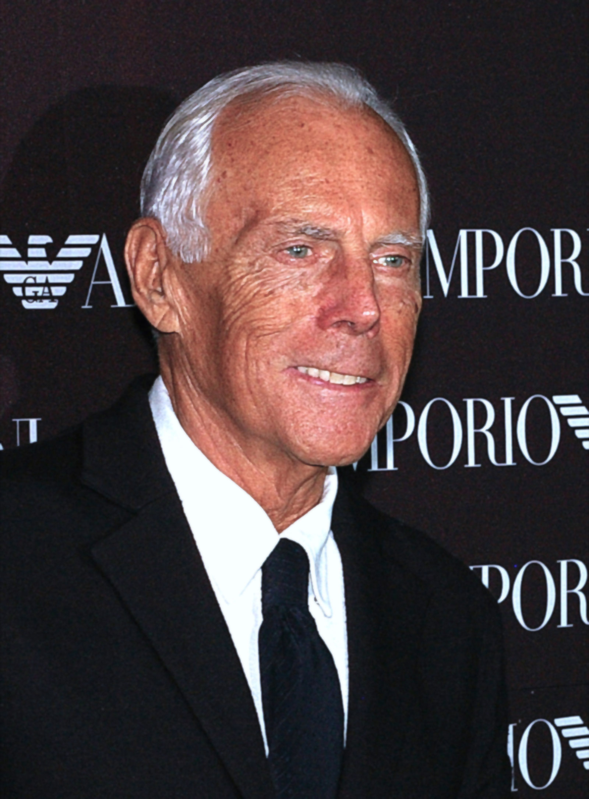

Maison
Armani
Milan · Italy

Founding
Founded in 1975 in Milan by Giorgio Armani and his partner Sergio Galeotti.
Key milestones
- Late 1970s. Introduction of unstructured tailoring that would redefine modern menswear and womenswear.
- 1980s. Rapid international expansion as the house becomes a global symbol of refined Italian style.
- 1981. Launch of Emporio Armani, broadening the group's contemporary reach.
- 1991. Launch of Armani Exchange, addressing the accessible segment.
- 1990s–2000s. Extension into lifestyle sectors including cosmetics, interiors, and hospitality.
Creative director & ownership
The Armani Group remains privately owned by Giorgio Armani himself, who also serves as chairman and chief creative director.
Main product lines
- Giorgio Armani — high-end ready-to-wear
- Emporio Armani — contemporary fashion
- Armani Exchange — accessible segment
- Accessories, fragrances, beauty, and home collections
Design DNA
Armani's design language is defined by minimalism, precise tailoring, muted color palettes, fluid silhouettes, and the absence of excessive ornamentation.
Iconic collections & pieces
The deconstructed jacket remains the house's foundational statement. Armani's red-carpet eveningwear helped define modern celebrity dressing, and its film costumes — most notably for American Gigolo (1980) — cemented the brand's cinematic identity.
Market positioning
Positioned across the premium to ultra-luxury segment, Armani enjoys strong global brand recognition across menswear, womenswear, and lifestyle categories.
Business scale
The Armani Group generates annual revenues on the order of several billion euros, reflecting a large-scale, vertically integrated fashion business.
Cultural impact & collaborations
The brand has influenced modern dress codes toward relaxed elegance and has engaged in collaborations across cinema, sports, and architecture, reinforcing its global lifestyle identity.